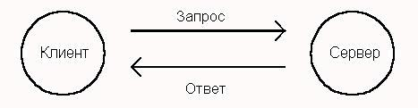

DDE ?
Давний и прижившийся протокол обмена данными между
разными приложениями, появившийся еще на заре эры Windows. С тех пор на его базе был создан
интерфейс OLE, а в 32-разрядном API Windows появились и другие методы межпрограммного
взаимодействия. Но ниша, занимаемая DDE, осталась неизменной - это оперативная передача и
синхронизация данных в приложениях.
Приложения, использующие DDE, разделяются на две категории - клиенты и
серверы (не путать с одноименной архитектурой СУБД). Оба участника процесса осуществляют
контакты (conversations) по определенным темам (topic), при этом в рамках темы производится
обмен элементами данных (items). Устанавливает контакт клиент, который посылает запрос,
содержащий имена контакта и темы. После установления контакта всякое изменение элемента
данных на сервере передается данным клиента.
Первоначально программирование DDE было чрезвычайно сложным делом. Оно
требовало взаимосвязанной обработки более чем десяти сообщений Windows. В версии Windows
3.1 появилась библиотека DDEML, которая перевела управление DDE на уровень вызова процедур.
Разработчики подсистемы DDE в Delphi, верные идеологии создания VCL, свели интерфейс этого
протокола к четырем компонентам: двум для сервера и двум для клиента.
На уровне поддержания контакта лежат компоненты TDDEServerConv и
TDDEClientConv. Первый играет пассивную роль - он только указывает имя одной из
поддерживаемых сервером тем. Все операции по установлению и разрыву контакта осуществляет
из приложения-клиента второй компонент.
Посредством одного контакта могут быть связаны и синхронизированы несколько
пар элементов данных. Для их описания предназначены компоненты TDDEServerItem и
TDDEClientItem. Каждый из них во время работы должен указывать на контакт, к которому он
привязан. Кроме того, в составе обоих есть свойства, содержащие некий текст.
При установленном контакте их содержимое синхронизируется.
Помимо этого в модуле DDEMAN описан и пятый компонент, который управляет всеми связями DDE.
Архитектура "клиент-сервер".

Рис 8.1 Взаимодействие между клиентом и сервером
Процесс передачи запроса серверу можно называть
транзакцией.
Строго говоря, транзакция - это совокупность трех действий: посылка запроса,
выполнение запроса, прием ответа.
Инициализация и создание канала связи
В процессе инициализации сервер должен выполнить такие
действия:
зарегистрировать себя в библиотеке DDEML;
зарегистрировать предоставляемый сервис, которым сможет воспользоваться приложение-клиент.
Клиент должен сделать следующее:
зарегистрировать себя в библиотеке DDEML;
создать канал связи с сервером, указав необходимый сервис.
Рассмотрим эти действия подробнее.
Регистрация в библиотеке DDEML
Если приложение собирается использовать DDEML, оно должно
зарегистрировать себя в библиотеке DDEML, вызвав специально предназначенную для этого
функцию с именем DdeInitialize.
Прототип функции DdeInitialize определен в файле ddeml.h (который должен
быть включен в исходный текст DDEML-приложения наряду с файлом windows.h):
UINT WINAPI DdeInitialize(
DWORD FAR* pidInst, // адрес идентификатора приложения
PFNCALLBACK pfnCallback, // адрес функции обратного вызова
DWORD afCmd, // флаги
DWORD ulRes); // зарезервировано
Функция DdeInitialize используется в процессе инициализации и серверов, и
клиентов DDEML. Сама по себе она не создает никаких каналов передачи данных между
приложениями, однако процедура регистрации приложения, выполняемая этой функцией, должна
быть проведена до вызова любых других функций, имеющих отношение к DDEML.
Займемся параметрами функции DdeInitialize.
Параметр pidInst представляет собой указатель на двойное слово, в которое
после регистрации будет записан идентификатор, присвоенный копии приложения библиотекой
DDEML (одновременно могут работать несколько копий одного и того же DDEML-приложения).
Иными словами, в процессе регистрации библиотека DDEML присваивает копии приложения
некоторый идентификатор, под которым она его "знает". Вы должны указывать полученный от
функции идентификатор при вызове всех остальных функций библиотеки DDEML.
Перед вызовом функции DdeInitialize ваше приложение должно записать в двойное слово,
адрес которого передается через первый параметр, нулевое значение.
Заметим, что идентификатор копии приложения, присвоенный в процессе
регистрации, и идентификатор копии приложения, полученный через параметр функции
WinMain - разные по смыслу (и по значению) идентификаторы.
Параметр pfnCallback представляет собой указатель на функцию обратного
вызова, определенную приложением для обработки транзакций. Как сервер, так и клиент
должны определить такую функцию. Функция обратного вызова вызывается системой DDEML и
содержит в себе всю логику обработки транзакций, определенную вами при разработке
приложения.
Если приложение вызывает функцию DdeInitialize несколько раз для
многократной регистрации, каждый раз следует указывать отдельную функцию обратного вызова.
Многократная регистрация вполне допустима, так как каждый раз библиотека DDEML будет
создавать для себя новый идентификатор приложения. Такая методика используется при создании
DLL-библиотек, работающих с DDEML. Обычным приложениям достаточно зарегистрировать себя
один раз и, соответственно, определить одну функцию обратного вызова.
Через параметр afCmd передается двойное слово, каждый бит которого является
флагом, определяющим режимы работы канала связи, а также влияющие на действия, выполняемые
функцией DdeInitialize.
Последний параметр с именем ulRes зарезервирован и должен иметь нулевое
значение.
Приведем фрагмент кода, выполняющего регистрацию сервера в библиотеке DDEML:
idInst = 0L;
lpDdeSrProc =
MakeProcInstance((FARPROC)DDEServerCallback, hInst);
if(DdeInitialize((LPDWORD)&idInst, (PFNCALLBACK)lpDdeSrProc,
APPCLASS_STANDARD, 0L))
{
return FALSE;
}
В этом фрагменте вначале создается переходник для
функции обратного вызова, затем адрес этого переходника указывается во втором параметре
функции DdeInitialize.
В случае успеха функция DdeInitialize возвращает нулевое значение. Для
проверки можно также использовать константу DMLERR_NO_ERROR, определенную в файле ddeml.h.
Если произошла ошибка, возвращается ненулевой код ошибки. Соответствующие константы
определены в файле ddeml.h и имеют префикс имени DMLERR.
Немного о флагах, передаваемых через параметр afCmd.
Символические константы с префиксом имени APPCLASS позволяют задать класс
приложения с точки зрения использования DDEML.
Класс APPCLASS_STANDARD предназначен для регистрации стандартного
DDEML-приложения. Этот класс использован в приведенном выше фрагменте кода.
Класс APPCLASS_MONITOR предназначен для отладчиков и других приложений,
управляющих работой системы DDEML.
Символические константы с префиксом имени APPCMD позволяют конкретизировать
функции, выполняемые приложением, и экономить системные ресурсы. Если DDEML-приложение
выполняет только функции клиента, следует указать флаг APPCMD_CLIENTONLY:
if(DdeInitialize((LPDWORD)&idInst, (PFNCALLBACK)lpDdeClProc,
APPCMD_CLIENTONLY, 0L))
{
return NULL;
}
В простейших случаях можно ограничиться использованием
класса APPCLASS_STANDARD при создании сервера DDEML и флага APPCMD_CLIENTONLY при создании
клиента DDEML. Остальные флаги влияют на то, когда и зачем будет вызываться функция
обратного вызова.
Если приложение больше не собирается работать с библиотекой DDEML, оно
должно вызвать функцию DdeUninitialize, передав ей в качестве единственного параметра
идентификатор копии приложения, полученный от функции DdeInitialize:
BOOL WINAPI DdeUninitialize(DWORD idInst);
Регистрация сервиса
Следующий этап в инициализации сервера DDEML заключается
в регистрации предоставляемого им сервиса.
Библиотека DDEML использует трехступенчатую схему адресации данных,
передаваемых по каналу связи - сервис (service), раздел (topic) и элемент данных
(data item). Приложение задает элементы адреса в виде текстовых строк размером не более
255 байт.
Сервер DDEML может предоставлять сервис одного или нескольких видов.
Как правило, один сервер предоставляет только один сервис, причем текстовая строка,
идентифицирующая сервис, часто совпадает с именем приложения. Но можно выбрать любую
другую строку.
Второй элемент адреса - раздел. В рамках одного сервиса можно определить
несколько разделов. Когда клиент DDEML создает канал с сервером, он указывает сервис и
раздел. Раздел объединяет группу элементов данных или выполняемых функций.
Канал DDEML служит для передачи блоков данных. В рамках одного раздела
сервер может обмениваться с клиентом разными блоками данных, каждый из которых
идентифицируется при передаче именем элемента данных. В процессе создания канала
связи не требуется указывать элементы данных.
Регистрация сервиса выполняется сервером DDEML обычно сразу после вызова
функции DdeInitialize и выполняется в два этапа.
На первом этапе текстовая строка имени сервиса сохраняется в специальной
системной таблице (таблице атомов), для чего вызывается функция DdeCreateStringHandle:
HSZ WINAPI DdeCreateStringHandle(
DWORD idInst, // идентификатор приложения
LPCSTR psz, // адрес текстовой строки
int iCodePage); // кодовая страница
Через параметр idInst приложение должно передать
идентификатор, полученный на этапе регистрации приложения в библиотеке DDEML функцией
DdeInitialize.
Параметр psz представляет собой указатель на текстовую строку,
закрытую двоичным нулем. Размер этой строки не должен превышать 255 байт.
В качестве значения для параметра iCodePage можно указать CP_WINANSI
(эта константа равна нулю). Можно также использовать значение, полученное от функции
GetKBCodePage. Функция GetKBCodePage не имеет параметров и возвращает номер текущей
кодовой страницы.
Идентификатор текстовой строки, возвращенный функцией DdeCreateStringHandle
и соответствующий регистрируемому сервису, следует передать функции DdeNameService:
HDDEDATA WINAPI DdeNameService(
DWORD idInst, // идентификатор приложения
HSZ hsz1, // идентификатор строки имени сервиса
HSZ hsz2, // зарезервировано
UINT afCmd); // флаги
Через параметр idInst приложение должно передать
идентификатор, полученный на этапе регистрации приложения в библиотеке DDEML функцией
DdeInitialize.
Параметр hsz1 предназначен для передачи имени сервиса через идентификатор
текстовой строки, возвращенной функцией DdeCreateStringHandle.
Параметр hsz2 зарезервирован, для него следует использовать нулевое
значение.
При регистрации сервиса через параметр afCmd следует передать значение
DNS_REGISTER (регистрация сервиса). Сервер DDEML в процессе своей работы может динамически
регистрировать и отменять виды предоставляемого сервиса. Для отмены сервиса через параметр
afCmd передается значение DNS_UNREGISTER.
Перед завершением работы сервер DDEML должен отменить весь зарегистрированный
им ранее сервис, вызвав функцию DdeInitialize с параметром afCmd, имеющим значение
DNS_UNREGISTER.
Если регистрация сервиса выполнена успешно, функция DdeNameService
возвращает ненулевое значение, а при ошибке - нулевое.
Одновременно с регистрацией сервиса сервер обычно создает идентификаторы
текстовых строк, содержащих имена используемых разделов и элементов данных. Для этого
вызывается все та же функция DdeCreateStringHandle.
Отметим, что регистрацию сервиса выполняет только сервер DDEML.
Что же касается создания идентификаторов текстовых строк функцией DdeCreateStringHandle,
то эта операция выполняется как сервером, так и клиентом. Полученные идентификаторы
используются при создании канала и в процессе передачи данных.
Зная идентификатор строки, приложение может получить строку,
вызвав функцию DdeQueryString:
DWORD WINAPI DdeQueryString(
DWORD idInst, // идентификатор приложения
HSZ hsz, // идентификатор строки
LPSTR psz, // адрес буфера для записи строки
DWORD cchMax, // размер буфера
int iCodePage); // кодовая страница
Назначение параметров понятно из комментариев в прототипе
функции.
Если идентификатор созданной текстовой строки используется в функции
обратного вызова (которую мы рассмотрим чуть позже), за освобождение ресурсов, связанных
с текстовой строкой, отвечает система DDEML. В противном случае приложение должно
самостоятельно уничтожать созданные им идентификаторы, вызывая функцию
DdeFreeStringHandle:
BOOL WINAPI DdeFreeStringHandle(
DWORD idInst, // идентификатор приложения
HSZ hsz); // идентификатор уничтожаемой строки
В случае успеха функция DdeFreeStringHandle возвращает ненулевое значение, при
ошибке - нулевое.
Функция обратного вызова DDEML
Когда сервер или клиент регистрирует себя в библиотеке DDEML при
помощи функции DdeInitialize, он указывает адрес переходника, созданного для функции
обратного вызова. Функция обратного вызова предназначена для обработки всех событий,
возникающих в процессе создания каналов связи и передачи данных.
В простейшем случае функция обратного вызова сервера DDEML может
выглядеть следующим образом:
HDDEDATA EXPENTRY _export DDEServerCallback(
WORD wType, // код транзакции
WORD wFmt, // формат данных
HCONV hConv, // идентификатор канала
HSZ hsz1, // первый идентификатор строки
HSZ hsz2, // второй идентификатор строки
HDDEDATA hData, // идентификатор глобальной области данных
DWORD dwData1, // первое дополнительное двойное слово
DWORD dwData2) // второе дополнительное двойное слово
{
switch(wType)
{
// Создание канала передачи данных
case XTYP_CONNECT:
{
...........
return((HDDEDATA)TRUE);
}
// Запрос данных от сервера
case XTYP_REQUEST:
{
...........
return(hData);
}
// Запрос на выполнение команды
case XTYP_EXECUTE:
...........
break;
// Передача данных серверу
case XTYP_POKE:
{
...........
return((HDDEDATA)DDE_FACK);
}
// Подтверждение создания канала
case XTYP_CONNECT_CONFIRM:
{
...........
break;
}
// Завершение работы канала
case XTYP_DISCONNECT:
{
...........
break;
}
// Ошибка
case XTYP_ERROR:
{
...........
break;
}
}
return((HDDEDATA)NULL);
}
Функция обратного вызова должна быть определена как
экспортируемая, поэтому мы указали ключевое слово _export.
Через первый параметр wType передается код транзакции. Подобно функции
окна, которая обрабатывает сообщения, функция обратного вызова DDEML выполняет обработку
транзакций. В зависимости от кода транзакции и результата обработки функция обратного
вызова DDEML возвращает то или иное значение.
Второй параметр задает код формата передаваемых данных. Для кодов формата
используются те же значения, что и для форматов Clipboard, например, CF_TEXT.
Через параметр hConv передается идентификатор канала передачи данных .
Назначение остальных параметров функции обратного вызова зависит от кода
транзакции. В приведенном выше фрагменте кода используются символические имена кодов
транзакций, определенные в файле ddeml.h, и имеющие префикс имени XTYP.
Функция обратного вызова для клиента DDEML выглядит точно также,
отличаясь лишь составом обрабатываемых транзакций.
При регистрации приложения в библиотеке DDEML функцией DdeInitialize
можно указать флаги, запрещающие или разрешающие поступление транзакций некоторых типов в
функцию обратного вызова. Запретив вызов функции обратного вызова для необрабатываемых
транзакций, можно ускорить работу приложения.
Создание и уничтожение канала
Последнее, что нужно сделать перед началом передачи
данных по каналу DDEML, - создать канал связи (conversation).
Канал связи между клиентом и сервером создается всегда по инициативе
клиента. После регистрации в библиотеке DDEML клиент вызывает функцию DdeConnect,
создающую канал связи:
HCONV WINAPI DdeConnect(
DWORD idInst, // идентификатор приложения
HSZ hszService, // идентификатор строки сервиса
HSZ hszTopic, // идентификатор строки раздела
CONVCONTEXT FAR* pCC); // адрес данных контекста
Через параметр idInst приложение должно передать
идентификатор, полученный на этапе регистрации приложения в библиотеки DDEML функцией
DdeInitialize.
Параметры hszService и hszTopic предназначены для передачи идентификаторов
строк, содержащих, соответственно, имена сервиса и раздела. Эти идентификаторы были
получены нами ранее при помощи функции DdeCreateStringHandle.
Последний параметр - указатель на структуру типа CONVCONTEXT.
Эта структура используется для указания информации о национальном языке и кодовой
странице, соответствующей передаваемым данным. В простейшем случае для данного параметра
можно указать значение NULL, при этом будет использована кодовая страница CP_WINANSI
(что приемлемо в подавляющем большинстве случаев).
Идентификатор канала, полученный от функции DdeConnect, следует сохранить
для обеспечения возможности получения данных от сервера.
Что же происходит, когда клиент создает канал, вызывая функцию DdeConnect?
Прежде всего, библиотека DDEML посылает транзакцию с кодом XTYP_CONNECT
всем активным серверам, которые зарегистрировали сервис, указанный во втором параметре
функции DdeConnect.
Для транзакции XTYP_CO������������������������������������������������������������������������������������������������������������������������������������������������������������������������������������������������������������������������������������������������������������������������������������������������������������������������������������������������������������������������������������������������������������������������������������������������������������������������������������������������������������������������������������������������������������������������������������������������������������������������������������������������������������������������������������������������������������������������������������������������������������������������������������������������������������������������������������������������������������������������������������������������������������������������������������������������������������������������������������������������������������������������������������������������������������������������������������������������������������������������������������������������������������������������������������������������������������������������������������������������������������������������������������������������������������������������������������������������������������������������������������������������������������������������������������������������������������������������������������������������������������������������������������������������������������������������������������������������������������������������������������������������������������������������������������������������������������������������������������������������������������������������������������������������������������������������������������������������������������������������������������������������������������������������������������������������������������������������������������������������������������������������������������������������������������������������������������������������������������������������������������������������������������������������������������������������������������������������������������������������������������������������������������������������������������������������������������������������������������������������������������������������������������������������������������������������������������������������������������������������������������������������������������������������������������������������������������������������������������������������������������������������������������������������������������������������������������������������������������������������������������������������������������������������������������������������������������������������������������������������������������������������������������������������������������������������������������������������������������������������������������������������������������������������������������������������������������������������������������������������������������������������������������������������������������������������������������������������������������������������������������������������������������������������������������������������������������������������������������������������������������������������������������������������������������������������������������������������������������������������������������������������������������������������������������������������������������������������������������������������������������������������������������������������������������������������������������������������������������������������������������������������������������������������������������������������������������������������������������� |